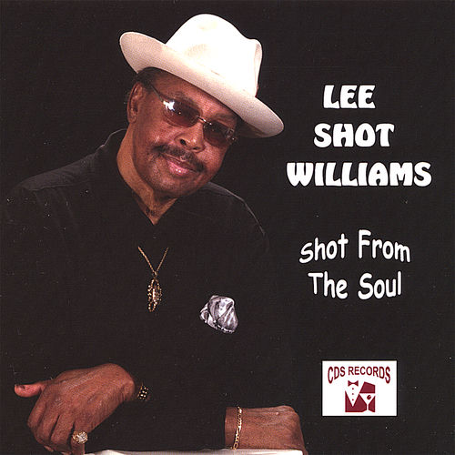

Lee "Shot" Williams
Henry Lee "Shot" Williams was an American blues singer. He got the nickname "Shot" from his mother at a young age, owing to his fondness for wearing suits and dressing up as a "big shot."
Complete Discography & Tracklists (2)